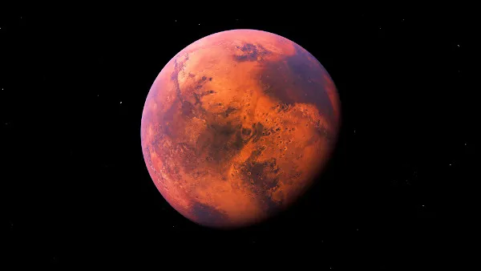

Entre a prata e o cobre
"Não é a resposta que ilumina, mas a pergunta." Douglas Adams

A Lua é o único satélite natural da Terra e é o quinto maior satélite natural do sistema solar. É o objeto mais brilhante no céu noturno, após o Sol e Vênus, e é também o segundo objeto mais brilhante no céu noturno, após a Lua cheia.
Marte é o quarto planeta a partir do Sol e é conhecido como o Planeta Vermelho devido à sua aparência. É o segundo planeta mais próximo da Terra e é o único planeta que já teve sua superfície explorada por rovers.